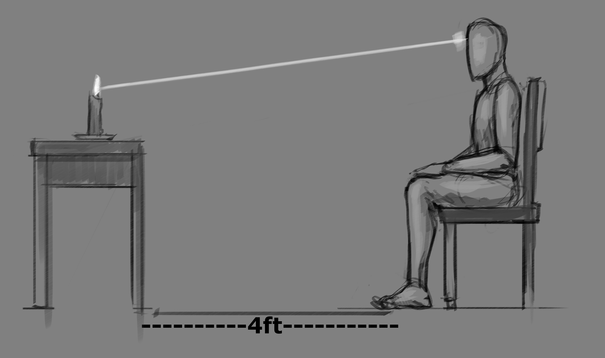

EXPLANATION:
SOME HAVE A HARD TIME WITH CONCENTRATION WHICH IS THE ABILITY TO FOCUS THEIR MENTAL WAVES ON A FIXED POINT. TO DEVELOP YOUR CONCENTRATION WE GIVE THE PRACTICE OF ATTENTION WHICH IS THE DOORWAY OF CONCENTRATION.
TAKE A CANDLE AND PLACE IT ON A DESK OR TABLE IN FRONT OF YOU. KEEP THE ROOM DIM OR DARK.
SIT IN A CHAIR WITH GOOD POSTURE WITH THE CANDLE LIT ABOUT 4 FEET IN FRONT OF YOU. STARE AT THE FLAME OF THE CANDLE WHILE FOCUSING ALL YOUR ATTENTION FOR 3 MINUTES.
IMMEDIATELY CLOSE YOUR EYES AND FOCUS ON THE AFTER-IMAGE FOR ANOTHER 3 MINUTES.
REPEAT PROCESS 2 MORE TIMES.
INITIALLY THE AFTERIMAGE MAY FADE IN AND OUT OR FADE AWAY COMPLETELY BUT DO NOT BE DISCOURAGED OVER TIME THE TASK WILL BECOME EASIER.
03:00